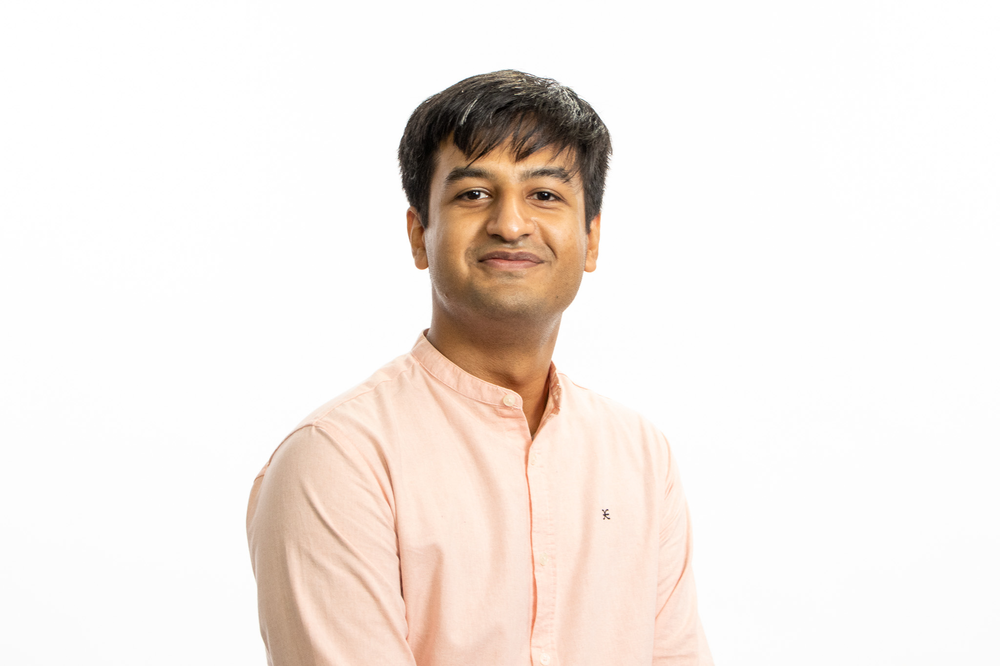

Corporate Finance, Debt & Financial Risk
I study corporate financial risk, debt financing and corporate disclosures, using large-scale financial data, textual analysis and machine learning to understand how firms communicate and manage financing-related risks.

Corporate Financial Risk, Debt & Information
My doctoral research examines how firms' financing conditions and corporate communication interact with financial risk. I am particularly interested in debt markets, financing constraints, risk communication and the information contained in corporate disclosures.
Methodologically, my work combines empirical corporate finance with large-scale textual data, natural language processing and machine-learning techniques to study information that is difficult to observe using conventional accounting and market measures alone.
Teaching experience in finance.
My teaching experience includes undergraduate finance courses, supporting students with core concepts, applied problem-solving and technology-assisted learning.
Corporate finance researcher working on debt, financial risk and information.
I am a PhD Researcher in Finance at Hanken School of Economics. My work focuses on empirical questions in corporate finance, with particular interest in debt markets, corporate risk and information contained in corporate communication.